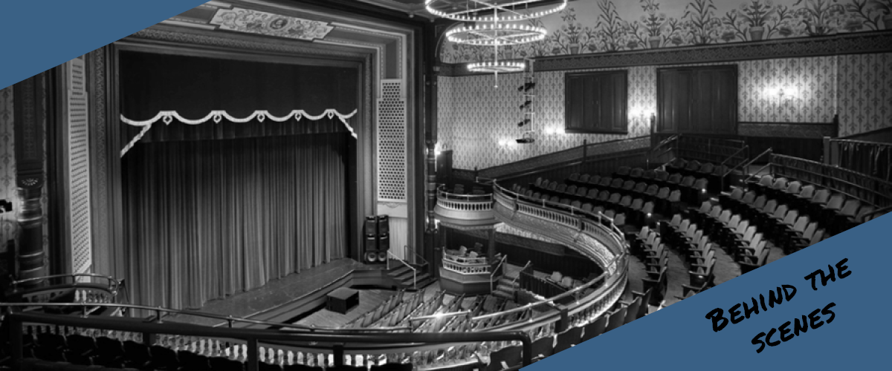

As a locally-owned company, we recognize the importance of being supportive of the community that supports us!
In addition to making in-kind donations, we’ve formed long-term, unique partnerships with various non-profit groups
– primarily in the performing arts and environmental, health and social advocacy. Using creativity and collaboration,
we are able to form meaningful relationships with organizations that enrich our community.
The Pabst and Riverside Theaters and Turner Hall Ballroom are key to the cultural vitality of downtown Milwaukee.
Since late 2002, our partnership with the theaters has evolved into a unique exchange of resources, including our Backstage
Barista program, in which
Colectivo baristas serve visiting artists prior to performances.

The Florentine Opera
The Florentine Opera Company is one of Wisconsin’s oldest and most enduring performing arts organizations.
Our relationship with the Florentine represents one of our most successful partnerships yet.
Since 2004, Colectivo Coffee has joined the Florentine Opera each summer in presenting “Florentine at the Lake”,
a series of live outdoor performances at our lakefront café. This series plus additional Colectivo cafe performances
allow the Florentine Opera to play to a diverse audience in a casual setting while sharing their talents with Colectivo customers.
An honorable mention is The Urban Ecology Center (UEC) as it has provided environmental education, awareness, and protection
to the Milwaukee area since 1991.
Website design and coding by Pradipta Dasgupta and Matty Vukonich
Version 1.0 April 12, 2017